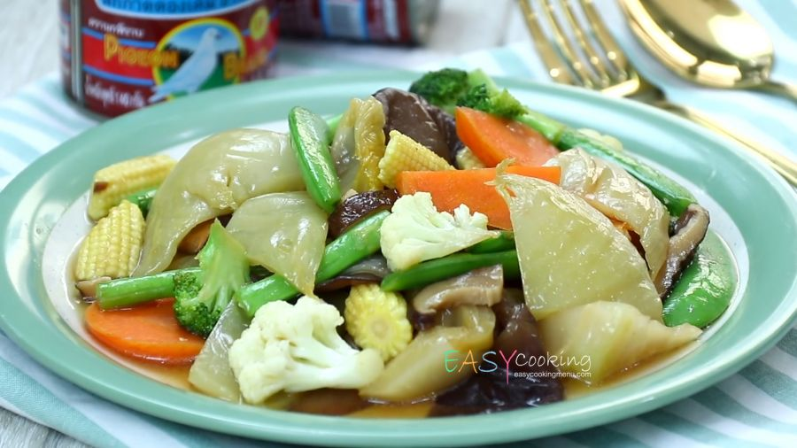

วงไง.คอม

ผัดผักรวมมิตร!!!!
ผัดผักง่ายๆ ทำกินเองได้ที่บ้าน
ส่วนผสม
- ผักกาดหางหงส์
- ยอดคะน้าฮ่องกง
- ดอกกะหล่ำ
- แครอท
- เห็ดหอมแห้งแช่น้ำจนนิ่ม
- กระเทียมสับ
- น้ำมันหอย
- ซอสปรุงรส
- น้ำตาลทราย
- แป้งมันผสมน้ำข้นๆ
- น้ำเปล่า
วิธีการทำ
- ตั้งน้ำในหม้อให้เดือดดี ใส่ผักที่มีชิ้นขนาดใหญ่ลงไปก่อน แล้วตามด้วยผักขนาดเล็กๆ ยกเว้นเห็ดหอม ลวกให้สุก ตักขึ้นพักไว้
- ตั้งกระทะ ใส่น้ำมันสำหรับผัดลงไปเล็กน้อย พอน้ำมันเริ่มร้อนก็ใส่กระเทียมสับลงไปผัดให้หอมๆ ใส่เห็ดหอมแช่น้ำจนนิ่มลงผัด เติมน้ำเปล่าในปริมาณตามใจชอบ
- ปรุงรสด้วย น้ำมันหอย ซอสปรุงรส และน้ำตาลทราย ชิมรสดูให้มีรสชาติเค็มๆ หวานๆ ใส่แครอท ดอกกะหล่ำ และยอดคะน้าที่ลวกแล้ว แล้วรอให้เดือดดีๆ
- ใส่แป้งมันผสมน้ำข้นๆ คนเร็วๆ อย่าให้เกาะกันเป็นก้อน รอให้เดือด จัดผักที่ลวกไว้แล้วส่วนที่ไม่ได้เอาลงไปเคี่ยวอีกครั้งใส่จาน ตักผักและน้ำซอสราด
คุณค่าทางโภชนาการ
Nutrition Facts
| Nutrition Facts |
| Serving : 4 |
|
| Amount per serving |
| Calories |
101 |
|
%Daily Vale |
| Total Fat 3.6g |
5% |
| Saturated Fat 9.5g |
3% |